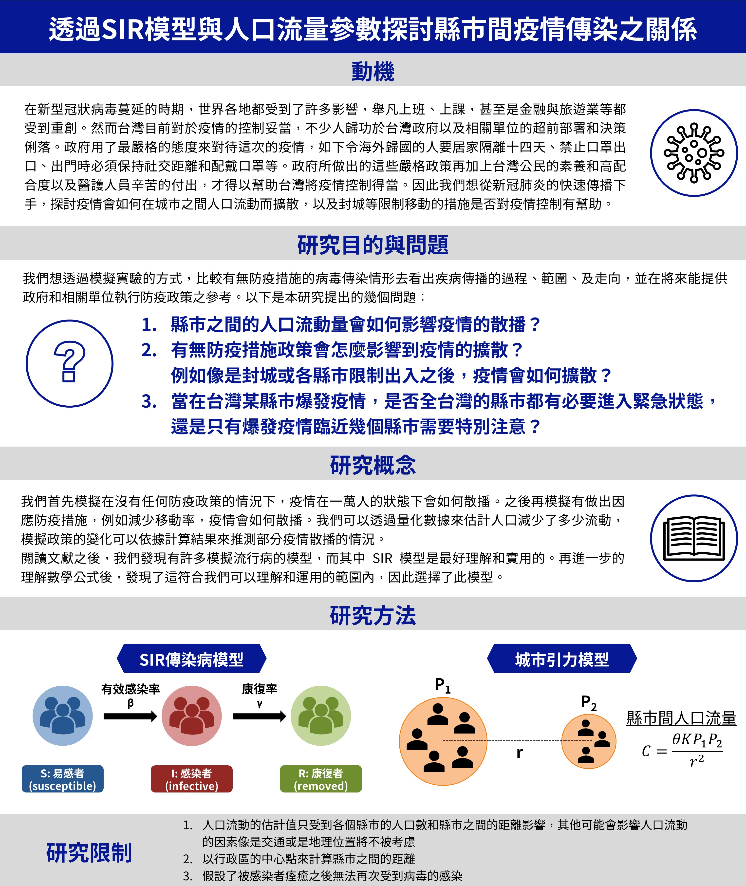
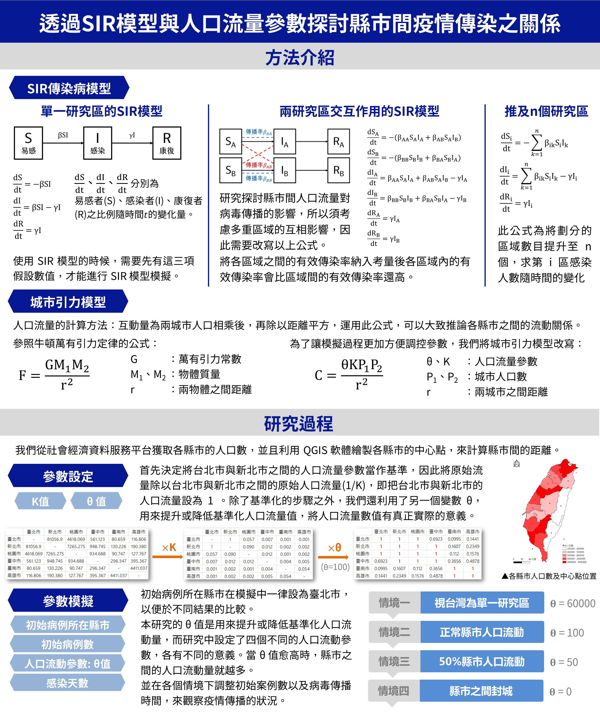
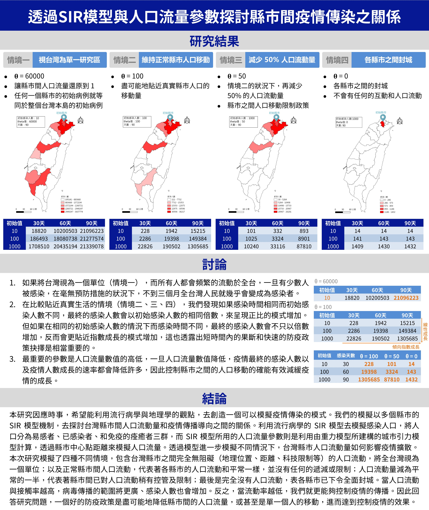

透過 SIR 模型與人口流量參數探討縣市間疫情傳染之關係
2020年 地理奧林匹亞團體賽：獲得論文獎佳作、海報佳作獎
*參賽學生為：林柏廷、陳頎崴、鄭楷祐（台北市私立復興實驗高級中學）
在新型冠狀病毒蔓延的時期，世界各地都受到了許多影響，舉凡上班、上課，甚至是金融與旅遊業等都受到重創。然而台灣目前對於疫情的控制妥當，不少人歸功於台灣政府以及相關單位的超前部署和決策俐落。政府用了最嚴格的態度來對待這次的疫情，如下令海外歸國的人要居家隔離十四天、禁止口罩出口、出門時必須保持社交距離和配戴口罩等。政府所做出的這些嚴格政策再加上台灣公民的素養和高配合度以及醫護人員辛苦的付出，才得以幫助台灣將疫情控制得當。因此我們想從新冠肺炎的快速傳播下手，探討疫情會如何在城市之間人口流動而擴散，以及封城等限制移動的措施是否對疫情控制有幫助。
本研究因應時事，希望能利用流行病學與地理學的觀點，去創造一個可以模擬疫情傳染的模式。我們的模擬以多個縣市的SIR 模型機制，去探討台灣縣市間人口流動量和疫情傳播導向之間的關係。利用流行病學的 SIR 模型去模擬感染人口，將人口分為易感者、已感染者、和免疫的痊癒者三群，而 SIR 模型所用的人口流量參數則是利用由重力模型所建構的城市引力模型計算，透過縣市中心點距離來模擬人口流量。透過模型進一步模擬不同情況下，台灣縣市人口流動量如何影響疫情擴散。
本次研究模擬了四種不同情境，包含台灣縣市之間完全無阻礙（地理位置、距離、科技限制等）的人口流動，將全台灣視為一個單位；以及正常縣市間人口流動，代表著各縣市的人口流動和平常一樣，並沒有任何的遞減或限制；人口流動量減為平常的一半，代表著縣市間已對人口流動稍有控管及限制；最後是完全沒有人口流動，表各縣市已下令全面封城。當人口流動與接觸率越高，病毒傳播的範圍將更廣、感染人數也會增加。反之，當流動率越低，我們就更能夠控制疫情的傳播。因此回答研究問題，一個好的防疫政策是盡可能地降低縣市間的人口流量，或甚至是單一個人的移動，進而達到控制疫情的效果。
更多詳細資訊：
- 查看 地理奧林匹亞小論文
- 查看 口頭報告投影片簡報
- 查看 海報檔
- 查看 英文社會評論投稿
- 查看 全國高級中等學校小論文寫作比賽


